沿用现有应用图标的调性：深色底 #111417 + 青柠 #c2ec94 + 奶白 #f3f7ee。
六个方向：两个说「球」、两个说「切」、一个说「时间轴」、一个只在字上做文章。
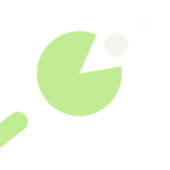
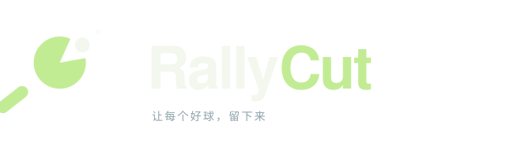
球拍咬掉一口，球正好在缺口里——「Cut」变成了一个动作，也是一张脸。
球的负空间就是播放键：乒乓球 × 视频，两个语义一次说完。
球的飞行轨迹压在剪辑时间轴上，高亮的那一段就是留下的回合。
球被切开、两半错位，切面留一道青柠边——最字面的「cut」。
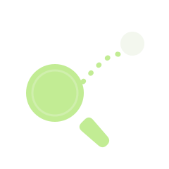
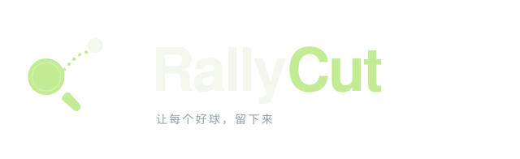
球拍 + 球 + 虚线飞行轨迹，是这个品类最不需要解释的组合。
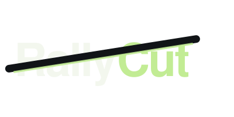
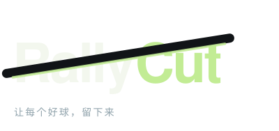
整个字标被一条斜切带穿过，切面泛青柠光——剪辑感写在名字里。